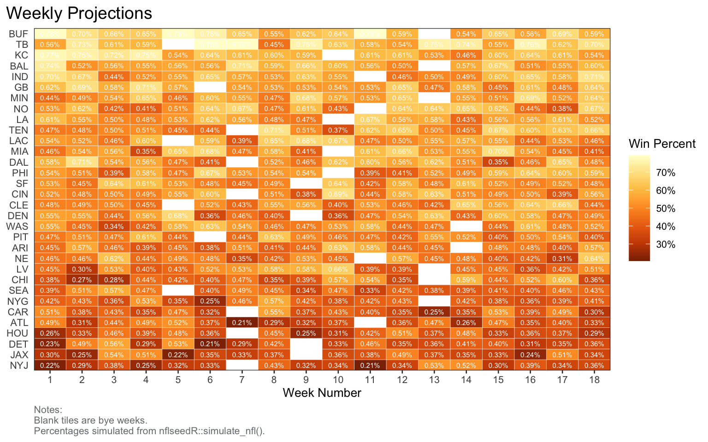
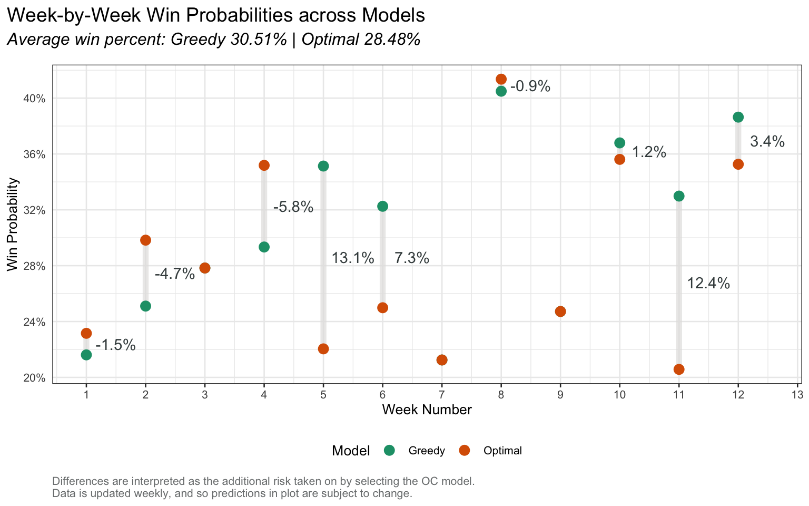
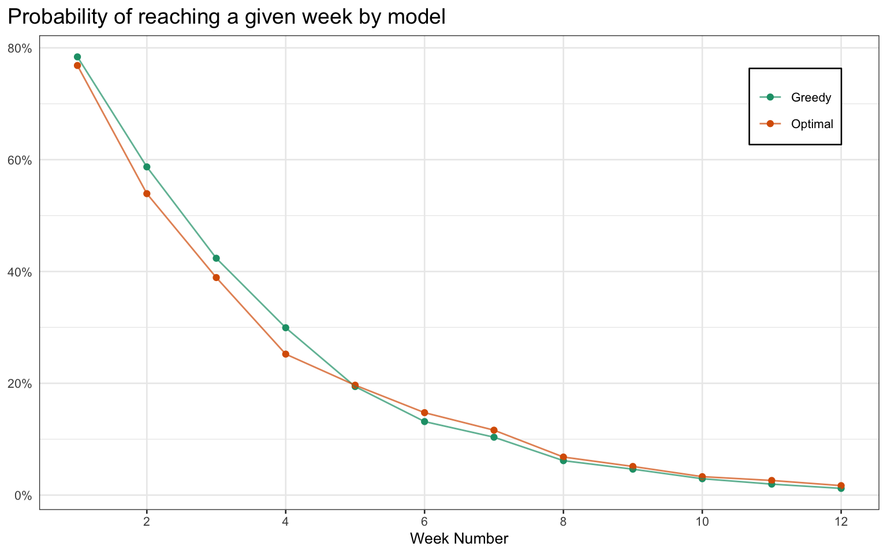

Simulating NFL games for competing in a Losers Pool.
I am competing in another NFL Loser’s Pool this year, and like past years I will be trying to use R to improve my chances in the pool. Feel free to read about the pool and my approach last year here: NFL Losers Pool - 2022. This year, my goal is to improve and make it through week 4.
Generating Season Projections
I’ve decided to look into creating my own ELO predictions. Specifically, I came across the nflseedR package, which appears to use ELO ratings to simulate the season - similar to the process done by fivethirtyeight, which I have previosuly used.
Let’s first collect the NFL season data using nflseedR. We have the week, date, teams playing, and some of the betting markets data for each game. Here is a link to the data dictionary.
rbind(sims |>select(week, team = home_team, pct = home_percentage), sims |>select(week, team = away_team, pct = away_percentage)) |>mutate(team =reorder(team, pct), text =sprintf("%.2f%%", pct)) |>ggplot(aes(x = week, y = team, fill = pct)) +geom_tile(color ="white") +scale_fill_distiller(palette ="YlOrBr", labels = scales::percent_format()) +scale_x_continuous(expand =c(0, 0), n.breaks =18) +scale_y_discrete(expand =c(0, 0)) +geom_text(aes(x = week, y = team, label = text), color ="white", size =2) +theme(panel.grid =element_blank(), axis.title.y =element_blank()) +labs(title ="Weekly Projections", x ="Week Number", fill ="Win Percent", caption ="Notes:\nBlank tiles are bye weeks.\nPercentages simulated from nflseedR::simulate_nfl().")

Pick sequencing
We are faced with the problem of when to pick each team. Given we simulated the season, and have win probabilities for each match-up, we can rely on some simple algorithms to compare possible pick orders.
Consider for example the Greedy algorithm, and the Optimal algorithm. I am stretching the term “optimal” pretty thin here, however it is to refer to the set of picks which return the global minimum cumulative percent over a set of weeks.
Greedy algorithm: Pick the best team to win in each week, starting at the earliest week. This approach has no foresight and is all about trying to make it to see another day.
Optimal algorithm: Make a sequence of picks to minimize their cumulative win probabilities across all weeks. We are able to write some computer code and can use it to find the global minimum.
# plot differencespicks =rbind(greedy |>mutate(label ="Greedy"), optimal |>mutate(label ="Optimal"))avg_pct =sprintf("Average win percent: Greedy %.2f%% | Optimal %.2f%%", mean(greedy$pct) *100, mean(optimal$pct) *100)# make plotpicks_cleaned <- picks %>%group_by(week) %>%mutate(d =lag(pct) - pct,y_pos = (lag(pct) + pct) /2,y_label =ifelse(d ==0, "", paste0(round(d *100, 1), "%")),team =ifelse(y_label ==""&!is.na(y_label), "", team) )ggplot(picks_cleaned, aes(x = week, y = pct, color = label, label = y_label)) +geom_line(aes(group = week), color ="#e3e2e1", size =2, alpha =0.7) +geom_point(size =3) +geom_text(aes(x = week, y = y_pos), color ="#414a4c", nudge_x =0.5) +# ggrepel::geom_text_repel(# aes(x = week, y = pct, label = team),# nudge_x = 0.3, color = "#414a4c", direction = "y"# ) +scale_color_brewer(palette ="Dark2") +scale_x_continuous(n.breaks =12) +scale_y_continuous(labels = scales::percent_format(), n.breaks =7) +labs(title ="Week-by-Week Win Probabilities across Models",subtitle = avg_pct,caption ="Differences are interpreted as the additional risk taken on by selecting the OC model.\nData is updated weekly, and so predictions in plot are subject to change.",x ="Week Number",y ="Win Probability",color ="Model" ) +theme(legend.position ="bottom",legend.background =element_blank() )

In order to get to the global minimum, you weakly deviate from the greedy strategy. This therefore guarantees that the greedy strategy will weakly outperform the optimal strategy out of the gate.
As we see with our projections, it isn’t until week 11 that the optimal algorithm catches up.
Code
picks |>ggplot(aes(x = week, y = prob, color = label)) +geom_point() +geom_line(alpha =0.7) +scale_y_continuous(labels = scales::percent_format()) +scale_x_continuous(n.breaks =9, minor_breaks =NULL) +scale_color_brewer(palette ="Dark2") +labs(title ="Probability of reaching a given week by model", x ="Week Number") +theme(axis.title.y =element_blank(), legend.position =c(0.9, 0.85), legend.title =element_blank(), legend.background =element_rect(color ="black"))

If the pool was about maximizing the likelihood of reaching the latest week in the pool, then the Optimal algorithm would be the overall best solution. The goal of the pool is however not to reach the latest week, but to outlast the other participants in the game. Therefore, there is room to improve on both these algorithms by using some game theory and psychology into how we can expect others to make their picks.
Predicting the picks of others
If we begin to consider team ownership, and the picking heuristics made by those in the pool, we can shift our objective from minimizing the risk of being eliminated to maximizing the likelihood of winning the pool.
By predicting situations where there is a clear remaining pick for a substantial proportion of the pool, it can be advantageous to deviate from the crowd. These scenarios are where an upset could lead to a mass elimination, and the increase in the likelihood of winning offsets the increase in being eliminated that round.
To emphisize this point, consider the following example:
Suppose there are \(N-1\) other players remaining in the pool, not counting yourself. Let’s further assume all the other players will be picking the same game, say the worst team in the league playing the best team. To simplify things further, the pool ends after this game and the prize pool \(\$M\) is to be split with the surviving players. Let’s work out what the probability would have to be for it to be advantageous to pick the underdog.
\[\begin{align*}
EV(\text{underdog}) &> E(\text{favourite}) \\
M \times \frac{1}{N} \times [\text{Prob. Favourite Wins}] &> M \times [\text{Prob. Underdog Wins}] \\
\frac{M\times p}{N} &> M\times (1-p) \\
p &> \frac{N}{N+1}
\end{align*}\]
Showing we should only follow the crowd if the probability of the team losing is very high. In the case where there are 7 players remaining in the pool, we would pick the favourite to win as long as the underdog team has a probability of winning of 12.5% or lower!
We would not be in this extreme of a situation, however it still highlights the principal of deviating away from a team more likely to lose to increase the odds of winning the pool.
Common Heuristics
There are a handful of possible heuristics that others can use, and so it will be difficult to predict perfectly which is being used.
Picking based on the spread
Picking based on who your faviourite team is playing
Picking based on fivethirtyeight or some other projections
Picking based on moneyline and other vegas odds
The process of predicting will get easier as the pool moves forward, as more players will have less teams remaining to pick from.
Source Code
---title: "2023 NFL Losers Pool"editor: sourcedescription: Simulating NFL games for competing in a Losers Pool. categories: - R - Sports Analytics - Monte Carloformat: html: code-fold: true code-tools: true---I am competing in another NFL Loser's Pool this year, and like past years I will be trying to use R to improve my chances in the pool. Feel free to read about the pool and my approach last year here: [NFL Losers Pool - 2022](https://www.jordanhutchings.com/blog/2022-09-07-nfl-losers-pool-2022/). This year, my goal is to improve and make it through week 4. ## Generating Season Projections I've decided to look into creating my own ELO predictions. Specifically, I came across the `nflseedR` package, which appears to use ELO ratings to simulate the season - similar to the process done by [fivethirtyeight](https://fivethirtyeight.com/), which I have previosuly used. Let's first collect the NFL season data using `nflseedR`. We have the week, date, teams playing, and some of the betting markets data for each game. Here is a link to the [data dictionary](https://nflreadr.nflverse.com/articles/dictionary_schedules.html). ```{r}pacman::p_load(nflseedR, kableExtra, dplyr, ggplot2, RColorBrewer)source(here::here("blog/2023-08-27-nfl-losers-pool-simulations/utils.R"))knitr::opts_chunk$set(echo=TRUE, warning=FALSE, message=FALSE, fig.height=5, fig.width=8)# setup params theme_set(theme_bw(10) +theme(# panel.grid.minor = element_blank(), axis.ticks.y =element_blank(),plot.title=element_text(size =14, hjust =0),plot.title.position ="plot",plot.subtitle=element_text(face="italic", size=12, margin=margin(b=12)),plot.caption=element_text(size=8, color="#7a7d7e", hjust =0), legend.position ="right", legend.background =element_blank(), legend.key =element_blank(), strip.background =element_rect(fill ="#2C3E50"), strip.text =element_text(color ="white") ))# read in projection datasims =get_projections()# format into data for methodsdata = sims |>mutate(team =case_when(away_percentage < home_percentage ~ away_team, away_percentage >= home_percentage ~ home_team), pct =case_when(away_percentage < home_percentage ~ away_percentage, away_percentage >= home_percentage ~ home_percentage)) |>select(week, team, pct) |>filter(week %in%1:12)```## Season win probabilities```{r}rbind(sims |>select(week, team = home_team, pct = home_percentage), sims |>select(week, team = away_team, pct = away_percentage)) |>mutate(team =reorder(team, pct), text =sprintf("%.2f%%", pct)) |>ggplot(aes(x = week, y = team, fill = pct)) +geom_tile(color ="white") +scale_fill_distiller(palette ="YlOrBr", labels = scales::percent_format()) +scale_x_continuous(expand =c(0, 0), n.breaks =18) +scale_y_discrete(expand =c(0, 0)) +geom_text(aes(x = week, y = team, label = text), color ="white", size =2) +theme(panel.grid =element_blank(), axis.title.y =element_blank()) +labs(title ="Weekly Projections", x ="Week Number", fill ="Win Percent", caption ="Notes:\nBlank tiles are bye weeks.\nPercentages simulated from nflseedR::simulate_nfl().")```## Pick sequencingWe are faced with the problem of when to pick each team. Given we simulated the season, and have win probabilities for each match-up, we can rely on some simple algorithms to compare possible pick orders. Consider for example the Greedy algorithm, and the Optimal algorithm. I am stretching the term "optimal" pretty thin here, however it is to refer to the set of picks which return the global minimum cumulative percent over a set of weeks. - Greedy algorithm: Pick the best team to win in each week, starting at the earliest week. This approach has no foresight and is all about trying to make it to see another day. - Optimal algorithm: Make a sequence of picks to minimize their cumulative win probabilities across all weeks. We are able to write some computer code and can use it to find the global minimum. ```{r}greedy =pick_greedy(data)optimal =pick_optimal(data)left_join(greedy, optimal, by ="week", suffix =c("_greedy", "_optimal")) |>select(week, team_greedy, pct_greedy, team_optimal, pct_optimal) |>kbl(caption ="Comparing Greedy and Optimal Algo", col.names =c("Week", "Pick", "Win Prob.", "Pick", "Win Prob."),digits =2) |>add_header_above(c(" "=1, "Greedy Algorithm"=2, "Optimal Algo"=2)) |>kable_paper("striped")# plot differencespicks =rbind(greedy |>mutate(label ="Greedy"), optimal |>mutate(label ="Optimal"))avg_pct =sprintf("Average win percent: Greedy %.2f%% | Optimal %.2f%%", mean(greedy$pct) *100, mean(optimal$pct) *100)# make plotpicks_cleaned <- picks %>%group_by(week) %>%mutate(d =lag(pct) - pct,y_pos = (lag(pct) + pct) /2,y_label =ifelse(d ==0, "", paste0(round(d *100, 1), "%")),team =ifelse(y_label ==""&!is.na(y_label), "", team) )ggplot(picks_cleaned, aes(x = week, y = pct, color = label, label = y_label)) +geom_line(aes(group = week), color ="#e3e2e1", size =2, alpha =0.7) +geom_point(size =3) +geom_text(aes(x = week, y = y_pos), color ="#414a4c", nudge_x =0.5) +# ggrepel::geom_text_repel(# aes(x = week, y = pct, label = team),# nudge_x = 0.3, color = "#414a4c", direction = "y"# ) +scale_color_brewer(palette ="Dark2") +scale_x_continuous(n.breaks =12) +scale_y_continuous(labels = scales::percent_format(), n.breaks =7) +labs(title ="Week-by-Week Win Probabilities across Models",subtitle = avg_pct,caption ="Differences are interpreted as the additional risk taken on by selecting the OC model.\nData is updated weekly, and so predictions in plot are subject to change.",x ="Week Number",y ="Win Probability",color ="Model" ) +theme(legend.position ="bottom",legend.background =element_blank() )```In order to get to the global minimum, you weakly deviate from the greedy strategy. This therefore guarantees that the greedy strategy will weakly outperform the optimal strategy out of the gate. As we see with our projections, it isn't until week 11 that the optimal algorithm catches up. ```{r}picks |>ggplot(aes(x = week, y = prob, color = label)) +geom_point() +geom_line(alpha =0.7) +scale_y_continuous(labels = scales::percent_format()) +scale_x_continuous(n.breaks =9, minor_breaks =NULL) +scale_color_brewer(palette ="Dark2") +labs(title ="Probability of reaching a given week by model", x ="Week Number") +theme(axis.title.y =element_blank(), legend.position =c(0.9, 0.85), legend.title =element_blank(), legend.background =element_rect(color ="black"))```If the pool was about maximizing the likelihood of reaching the latest week in the pool, then the Optimal algorithm would be the overall best solution. The goal of the pool is however not to reach the latest week, but to outlast the other participants in the game. Therefore, there is room to improve on both these algorithms by using some game theory and psychology into how we can expect others to make their picks.## Predicting the picks of othersIf we begin to consider team ownership, and the picking heuristics made by those in the pool, we can shift our objective from minimizing the risk of being eliminated to maximizing the likelihood of winning the pool. By predicting situations where there is a clear remaining pick for a substantial proportion of the pool, it can be advantageous to deviate from the crowd. These scenarios are where an upset could lead to a mass elimination, and the increase in the likelihood of winning offsets the increase in being eliminated that round. To emphisize this point, consider the following example: Suppose there are $N-1$ other players remaining in the pool, not counting yourself. Let's further assume all the other players will be picking the same game, say the worst team in the league playing the best team. To simplify things further, the pool ends after this game and the prize pool $\$M$ is to be split with the surviving players. Let's work out what the probability would have to be for it to be advantageous to pick the underdog. \begin{align*}EV(\text{underdog}) &> E(\text{favourite}) \\M \times \frac{1}{N} \times [\text{Prob. Favourite Wins}] &> M \times [\text{Prob. Underdog Wins}]\\\frac{M\times p}{N} &> M\times (1-p) \\p &> \frac{N}{N+1}\end{align*}Showing we should only follow the crowd if the probability of the team losing is very high. In the case where there are 7 players remaining in the pool, we would pick the favourite to win as long as the underdog team has a probability of winning of 12.5% or lower! We would not be in this extreme of a situation, however it still highlights the principal of deviating away from a team more likely to lose to increase the odds of winning the pool. ### Common HeuristicsThere are a handful of possible heuristics that others can use, and so it will be difficult to predict perfectly which is being used. 1. Picking based on the spread2. Picking based on who your faviourite team is playing3. Picking based on fivethirtyeight or some other projections4. Picking based on moneyline and other vegas oddsThe process of predicting will get easier as the pool moves forward, as more players will have less teams remaining to pick from.